Scaling Latent World Models with Natural Language Actions
Junha Song1*Geonmo Gu1Jeongeun Park2Heejeong Nam3 Lucas Maes4Byeongho Heo1Dongyoon Han1Sangdoo Yun1†
1NAVER AI Lab2Georgia Institute of Technology 3Brown University4Mila & Université de Montréal
* Project lead† Corresponding author
01Background
World Models
What is a world model, and why do we need one?
Background
Motivation
Our approach
LaLa-World results
LaLa-Policy results
Looking ahead
01·Background
Acting and Imagining Together
Humans imagine what happens next while they act.
Now
xt
Push right
at
World model
x^t+1=f(xt,at)
Imagine one step
x^t+1
Keep pushing
at+1
Imagine two steps
x^t+2
World-model research aims to give machines this ability.
01·Background
What Is a World Model?
An actor chooses an action.
A world model imagines what happens next.
A critic evaluates the imagined outcome.
DreamerV3, MuZero, TD-MPC2
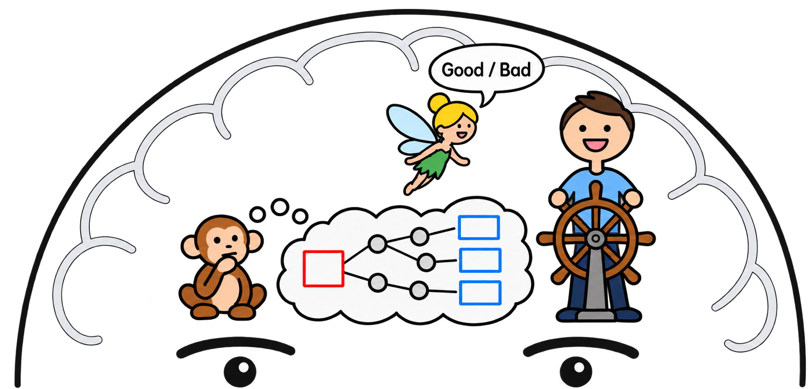
Actor
World model
Critic
[Hafner et al., 'Mastering Diverse Control Tasks through World Models']
[Schrittwieser et al., 'Mastering Atari, Go, Chess and Shogi by Planning with a Learned Model']
[Hansen et al., 'TD-MPC2: Scalable, Robust World Models for Continuous Control']
01·Background
JEPA-Style Latent World Models
Learn to predict future representations without game-reward supervision.
DINO-WM, V-JEPA 2-AC, LeWorldModel
Our focus
Future latent
Future predictor
Current latent + action
[Zhou et al., 'DINO-WM: World Models on Pre-trained Visual Features enable Zero-shot Planning']
[Assran et al., 'V-JEPA 2: Self-Supervised Video Models Enable Understanding, Prediction and Planning']
[Maes et al., 'LeWorldModel: Stable End-to-End Joint-Embedding Predictive Architecture from Pixels']
01·Background
The Data behind Latent World Models
Current observation, numerical action, future observation.
Current observation
Numerical action
[0.81, 0.84, −1.46, −0.08, …]
Future observation
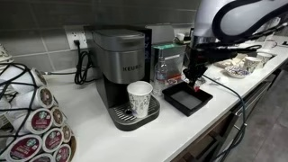
01·Background
The Usual Numerical-Action Predictor
Visual tokens and embedded numerical actions condition a Transformer.
The action interface and training data define the supported domains.
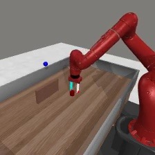
Vision encoder
[0.81, 0.84, −1.46, −0.08]
Numerical vector
Action MLP
Transformer predictor
Future latent
Typically trained on
1
Control data only
2
A fixed set of domains
01·Background
Actions Differ across Domains
Vector size and physical meaning both change.
Domain
Numerical action
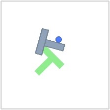
Push-T
2-D displacement
[−0.60, −1.95]
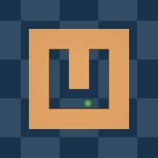
PointMaze
2-D force
[0.50, 0.46]
MetaWorld
4-D position + grip
[0.81, 0.84, −1.46, −0.08]
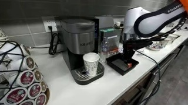
DROID
7-D pose + gripper
[0.5, 0.6, 5.9, 2, −7, …]
OpenVid
Web video
No numerical action label
Predictor for Push-T
Predictor for PointMaze
Predictor for MetaWorld
Predictor for DROID
02Motivation
Generative World Models
Language connects broad visual pretraining to policy learning.
Background
Motivation
Our approach
LaLa-World results
LaLa-Policy results
Looking ahead
02·Motivation
What We Mean by Generative World Models
Video generation models, such as Cosmos-Predict2, generate future frames from the current frame and a text prompt.
Video diffusion modelCosmos-Predict2
The hand stirs the liquid in the cup.
Current frame
Text prompt
Video noise
Future frames
[Ali et al., 'World Simulation with Video Foundation Models for Physical AI']
02·Motivation
Language Describes Visual Change
Video generation models learn from diverse images and videos.
Video transition
The hand stirs the liquid in the cup.
Edit
Swap the moon with a vibrant sunset.
[Nan et al., 'OpenVid-1M: A Large-Scale High-Quality Dataset for Text-to-Video Generation']
[Wei et al., 'OmniEdit: Building Image Editing Generalist Models through Specialist Supervision']
02·Motivation
A Broad Visual Prior
Language makes heterogeneous visual data usable in a shared prediction task.
Language-conditioned video model
Broad visual pretraining
02·Motivation
Video Pretraining Can Support Policy Learning
Cosmos-Predict2 predicts future video.
Cosmos Policy learns actions and their visual consequences.
Cosmos-Predict2
Video diffusion model
Observation + task + proprioception
Video noise
Future frames
Policy fine-tuning
Cosmos Policy
Same video diffusion model
Observation + task + proprioception
Video noise
Future frames
Action noise
Action chunk
[Ali et al., 'World Simulation with Video Foundation Models for Physical AI']
[Kim et al., 'Cosmos Policy: Fine-Tuning Video Models for Visuomotor Control and Planning']
03Our approach
LaLa-World
The same transfer idea, with future prediction in latent space.
Background
Motivation
Our approach
LaLa-World results
LaLa-Policy results
Looking ahead
03·Our approach
Language as a Shared Action Interface
Keep direction and magnitude while expressing actions in words.
The same format also describes visual change in web data.
All domains condition one future predictor through language.
Domain
Numerical action
Our idea: say every action in words
Push-T
2-D displacement
[−0.60, −1.95]
[−0.60, −1.95]
Move the pusher 0.60 left and 1.95 down.
PointMaze
2-D force
[0.50, 0.46]
[0.50, 0.46]
Push the ball with force 0.50 right and 0.46 up.
MetaWorld
4-D position + grip
[0.81, 0.84, −1.46, −0.08]
[0.81, 0.84, −1.46, −0.08]
Move the gripper 0.81 right, 0.84 forward, 1.46 down and loosen the grip by 0.08.
DROID
7-D pose + gripper
[0.5, 0.6, 5.9, 2, −7, …]
[0.5, 0.6, 5.9, 2, −7, …]
Move gripper 0.5 cm forward, 0.6 cm right, 5.9 cm up; rotate roll +2°, pitch −7°, …
OpenVid
Web video
No numerical action label
No numerical action label
The hand stirs the liquid in the cup with the spoon, creating a swirling motion.
z
language condition
Predictor for multiple domains
03·Our approach
Scaling Training Data for Latent World Models
A shared prediction task can absorb increasingly diverse visual data.
Generative WMs
Prior latent WMs
LaLa-World
Diverse images & videos
Fixed-domain control data
Multi-domain control data
Diverse images & videos
03·Our approach
LaLa-World Architecture
Encode observations into visual representations.
A language model reads the condition alongside visual tokens.
Visual encoderfrozen
Task instruction
Future queries
Pretrained LM predictorQwen3.5-0.8B
Future latent
Visual encoderfrozen
target
[Qwen Team, 'Qwen3.5: Towards Native Multimodal Agents']
03·Our approach
Fine-Tuning LaLa-World into LaLa-Policy
Reuse the pretrained future predictor.
An action generator denoises noise into a robot action chunk.
Visual encoderfrozen
Task instruction
Future queries
Pretrained LM predictorQwen3.5-0.8B
LaLa-Policy
Future latent
Action queries
Action generator
noise
Action chunk
[Qwen Team, 'Qwen3.5: Towards Native Multimodal Agents']
04Results
LaLa-World Results
Does the predicted future help us choose useful actions?
Background
Motivation
Our approach
LaLa-World results
LaLa-Policy results
Looking ahead
04·LaLa-World results
Planning toward a Goal Image
Given an initial state and a goal, find an action sequence.
Initial observation
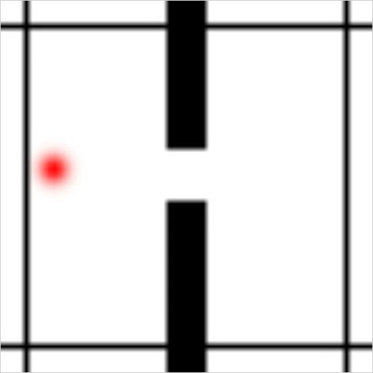
Goal observation
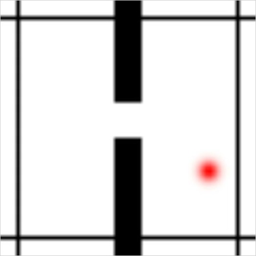
Which action sequence?
at,at+1,…,at+h−1
04·LaLa-World results
Sampling Candidate Sequences
Imagining Candidate Futures
Latent Goal Comparison
MPC Executes, Observes, and Replans
Draw action sequences and express each one in language.
Roll out the latent world model for each sequence.
Rank candidates by the L2 distance in latent space.
Keep the best candidates, refit, and sample again.
Current
Candidate sequences
[a1, a2, a3, …]
[b1, b2, b3, …]
[c1, c2, c3, …]
LaLa-World
Imagined futures
Goal
Encoder
L2 distance
far
closest
far
Refit distribution
Resample sequences
[Rubinstein, 'Optimization of Computer Simulation Models with Rare Events']
04·LaLa-World results
Planning across Five Shared Benchmarks
LaLa-World achieves the highest average success rate.
Average success rate (%)
0
20
40
60
80
100
LaLa-World
72.1
JEPA-WMs
64.6
DINO-WM
62.3
LeWorldModel
28.1
Wall
PointMaze
Push-T
MetaWorld-R
MetaWorld-RW
[Terver et al., 'What Drives Success in Physical Planning with Joint-Embedding Predictive World Models?']
[Zhou et al., 'DINO-WM: World Models on Pre-trained Visual Features enable Zero-shot Planning']
[Maes et al., 'LeWorldModel: Stable End-to-End Joint-Embedding Predictive Architecture from Pixels']
04·LaLa-World results
Selected Actions in Wall
Numerical language actions
1.4×
[Zhou et al., 'DINO-WM: World Models on Pre-trained Visual Features enable Zero-shot Planning']
04·LaLa-World results
Selected Actions in Push-T
Numerical language actions
1.4×
[Chi et al., 'Diffusion Policy: Visuomotor Policy Learning via Action Diffusion']
04·LaLa-World results
Selected Actions in PointMaze
Qualitative language actions
1.4×
[Fu et al., 'D4RL: Datasets for Deep Data-Driven Reinforcement Learning']
04·LaLa-World results
Selected Actions in Rope
Qualitative language actions
1.4×
[Zhang et al., 'AdaptiGraph: Material-Adaptive Graph-Based Neural Dynamics for Robotic Manipulation']
05Results
LaLa-Policy Results
Does latent world-model pretraining improve action prediction?
Background
Motivation
Our approach
LaLa-World results
LaLa-Policy results
Looking ahead
05·LaLa-Policy results
How the Policy Recipes Differ
VLAs predict actions, but not their consequences
VLA
observation + instruction
VLA
actions
outcome ?
Actions only
the outcome of the action is never predicted
Humans
force
imagined outcome
an image, or a latent
Action + imagined consequence
we foresee the result of the force we apply
[Physical Intelligence et al., 'π0.5: a Vision-Language-Action Model with Open-World Generalization']
[Li et al., 'CogVLA: Cognition-Aligned Vision-Language-Action Model via Instruction-Driven Routing & Sparsification']
05·LaLa-Policy results
How the Policy Recipes Differ
The initialization and prediction targets distinguish these representative models.
Policy
Initialization
Joint prediction
VLA
Pretrained VLM
Action chunk
Cosmos Policy
Cosmos-Predict2
Action chunk + future frames
LaLa-Policy
LaLa-World
Action chunk + future latents
[Physical Intelligence et al., 'π0.5: a Vision-Language-Action Model with Open-World Generalization']
[Li et al., 'CogVLA: Cognition-Aligned Vision-Language-Action Model via Instruction-Driven Routing & Sparsification']
[Kim et al., 'Cosmos Policy: Fine-Tuning Video Models for Visuomotor Control and Planning']
[Ali et al., 'World Simulation with Video Foundation Models for Physical AI']
05·LaLa-Policy results
World-Model Pretraining Transfers to Policy Learning
LaLa-Policy is competitive with strong VLA and video-policy baselines.
RoboCasa success rate (%)
50
52
54
56
58
60
LaLa-Policy from LaLa-World
57.3
LaLa-Policy from Random Init
55.5
Cosmos Policy
56.0
MolmoAct2
54.3
π0.5
54.5
+1.8
from LaLa-World pretraining
[Physical Intelligence et al., 'π0.5: a Vision-Language-Action Model with Open-World Generalization']
[Fang et al., 'MolmoAct2: Action Reasoning Models for Real-World Deployment']
[Kim et al., 'Cosmos Policy: Fine-Tuning Video Models for Visuomotor Control and Planning']
[Nasiriany et al., 'RoboCasa: Large-Scale Simulation of Everyday Tasks for Generalist Robots']
05·LaLa-Policy results
Faster Policy Inference
LaLa-Policy predicts future latents while keeping action performance competitive.
RoboCasa · model inference time
0
2
4
6
8
10
12
14
seconds per trajectory · lower is better
LaLa-Policy
2.12 s
Cosmos Policy
11.71 s
5.5×
faster
[Kim et al., 'Cosmos Policy: Fine-Tuning Video Models for Visuomotor Control and Planning']
[Nasiriany et al., 'RoboCasa: Large-Scale Simulation of Everyday Tasks for Generalist Robots']
05·LaLa-Policy results
Acting and Anticipating Together
The policy jointly predicts an action chunk and a future latent.
Observation + instruction
(xt,ℓ)
LaLa-Policy
Consequence in latent space
Action chunk
e^t+N
a^t:t+N−1
05·LaLa-Policy results
Acting and Anticipating Together
The video compares execution with a prediction made earlier.
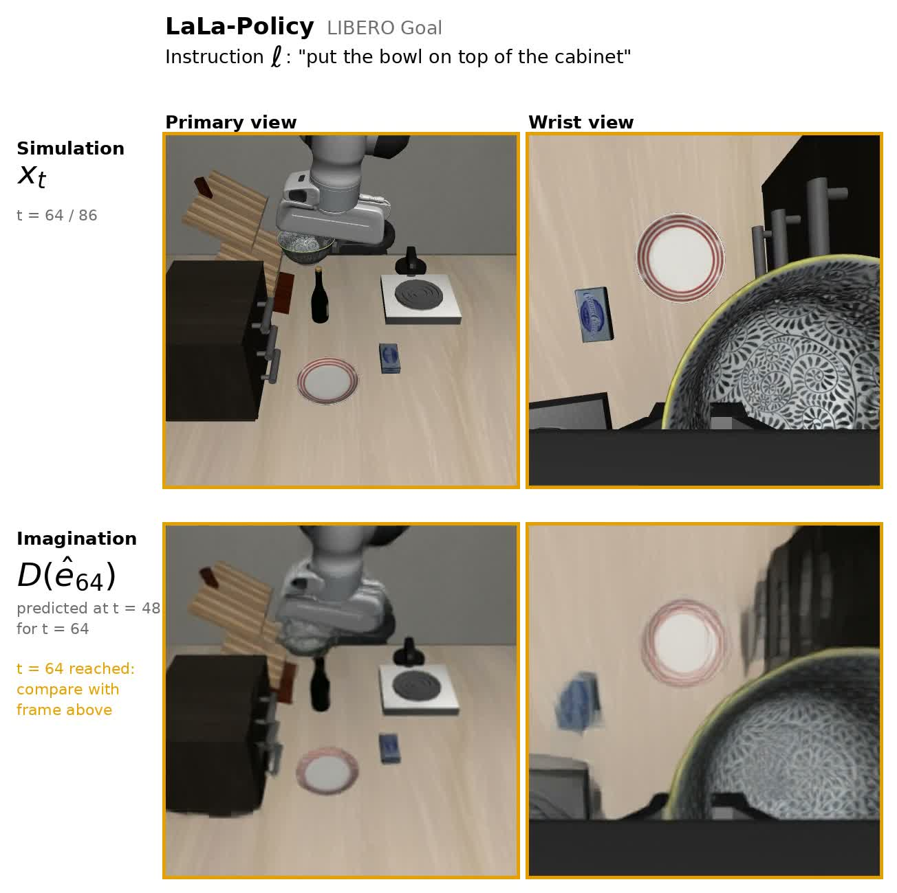
(x0,ℓ)⟶(D(e^16),a^0:15)
Predicted actions in simulators
Decoded predicted futures
05·LaLa-Policy results
LIBERO: Bowl to Plate
“Pick up the black bowl on the ramekin and place it on the plate.”
Simulator execution
Decoded future
[Liu et al., 'LIBERO: Benchmarking Knowledge Transfer for Lifelong Robot Learning']
05·LaLa-Policy results
LIBERO: Bowl to Cabinet
“Put the bowl on top of the cabinet.”
Simulator execution
Decoded future
[Liu et al., 'LIBERO: Benchmarking Knowledge Transfer for Lifelong Robot Learning']
05·LaLa-Policy results
RoboCasa: Serve Coffee
“Press the button on the coffee machine to serve coffee.”
Simulator execution
Decoded future
[Nasiriany et al., 'RoboCasa: Large-Scale Simulation of Everyday Tasks for Generalist Robots']
05·LaLa-Policy results
RoboCasa: Open the Microwave
“Open the microwave door.”
Simulator execution
Decoded future
[Nasiriany et al., 'RoboCasa: Large-Scale Simulation of Everyday Tasks for Generalist Robots']
06Looking ahead
Future Directions
Scaling latent world models and connecting them to agents.
Background
Motivation
Our approach
LaLa-World results
LaLa-Policy results
Looking ahead
06·Looking ahead
Extending the Current Work
Test whether the gains transfer to real robots.
01
Scale data and model
02
Learn the encoder end-to-end
03
Evaluate on real robots
Larger predictor
Predictor
Vision encoder
Stable joint learning
Generalization in deployment
06·Looking ahead
Robotics Grows with Agents
My hypothesis: robotics can grow as rapidly as AI agents.
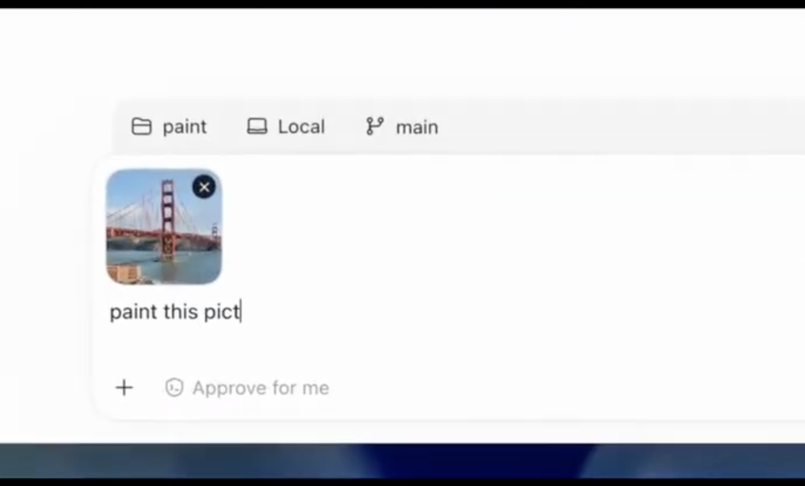
A request
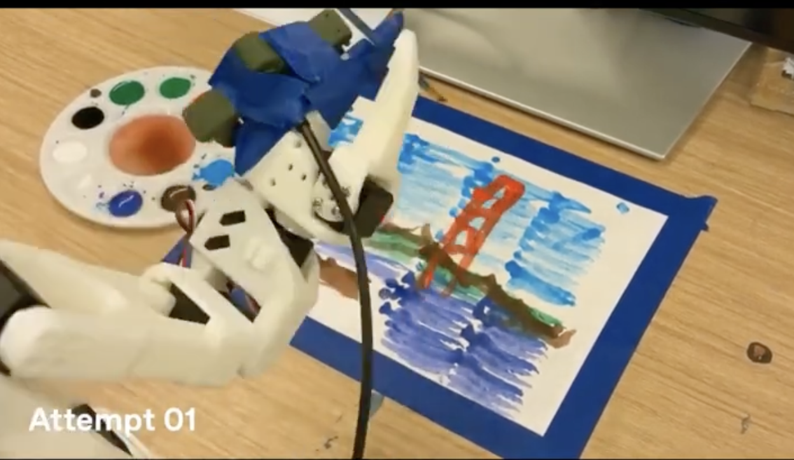
Attempt 01
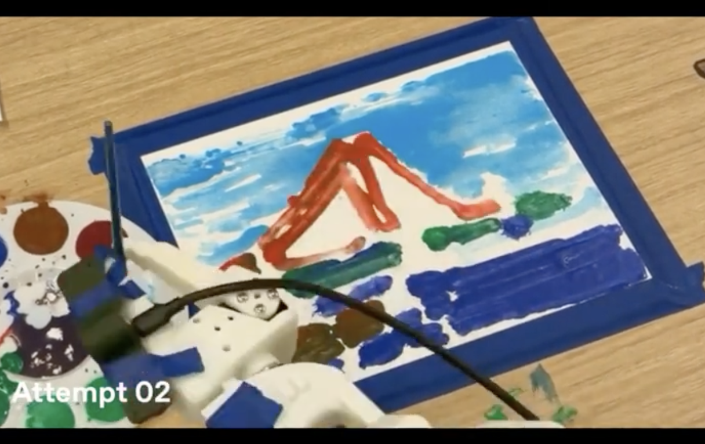
Attempt 02
A system that acts, observes, and improves
06·Looking ahead
Research Questions at the Agent–Robot Interface
Where can a latent world model be most useful?
Benchmarks
Evaluate long tasks and repeated attempts
World models
Anticipate outcomes before execution
Long-context memory
Retain experience across tasks
Self-improving systems
Improve through repeated attempts
Thank You
Junha Song
Keys
→SpacePgDn click
next click (build) → next slide
←PgUpBackspace
previous click
Shift+→ / Shift+←
next / previous slide (skip builds)
HomeEnd
first / last slide
number + Enter
go to slide
p
presenter window (script, next view, timer)
l
slide list (also the ☰ button in the bottom bar)
o
overview (thumbnails)
f
fullscreen
b.
black screen
r
restart the video on this slide
t
reset the timer
?Esc
this help / close
Move the mouse to the bottom edge for the navigation bar (previous / next slide, slides left, list).
URL #slide-id/click opens a given state, ?print lays out every slide for PDF export.